Uydu görüntüsü, dijital yükseklik verisi ve makine öğrenmesini birleştirerek arkeolojik yerleşim izlerini ve jeolojik alterasyon alanlarını saha çalışmasından önce haritalıyoruz.
2018’den beri uzman kadro ve teknik ekibimizle yer altındaki ve yer üstündeki izleri bilimin ışığında gün yüzüne çıkarıyoruz.
Uydu verisinden sahaya giden yolu kısaca izleyin.
Videodaki görüntüler yapay zekâ ile üretilmiş örnek gösterimlerdir; gerçek analiz çıktıları için Analizler bölümüne bakınız.
Aynı uydu verisi işleme hattını farklı problem alanlarına uyarlıyoruz — arkeolojik keşiften maden aramaya kadar.
Termal, vejetasyon ve morfolojik anomalileri çok bantlı uydu görüntülerinden çıkararak yüzeyde görünmeyen yerleşim ve yapı izlerini önceliklendiriyoruz.
Planet görüntüleri üzerinden mineral alterasyon oranlarını ve referans spektral imzaları karşılaştırarak potansiyel maden hedeflerini işaretliyoruz.
AnomaliRadar mobil uygulamasıyla, masaüstünde işaretlenen anomali noktalarını saha ekibi GPS üzerinden doğrudan takip edip doğrular.
Analiz tek bir görüntüyle sınırlı kalmaz. Başlangıç ve bitiş yılını belirlersiniz, çalışma bu yıl aralığı için yürütülür; böylece zaman içindeki değişim de değerlendirmeye girer.
Aynı çalışmada ihtiyacınız olan branşları birlikte seçebilirsiniz: heyelan ve zemin, tarım izleme, maden aramacılığı ve arkeoloji.
Fiyatları GörÇıktılar ön değerlendirme niteliğindedir; saha doğrulaması ve gerekli izinler ayrıca yapılmalıdır.
Heyelan, tarım, maden ve arkeoloji analizlerinin neye baktığını ve ne ürettiğini, gerçek bir test alanından alınmış çıktılarla inceleyin.
Eğim, radar kararsızlığı, nem ve bitki örtüsü kaybından ön risk haritası çıkarılır. Yamaçlar skorlanır ve riskli görünen bölgeler harita üzerinde numaralandırılır.
Çıktı: Heyelan risk skoru haritası; düşük, orta ve yüksek sınıfların alan oranları; en önemli bölgeler
Ön değerlendirmedir. Gerçek deformasyon (mm) ölçülmez; kesin sonuç için SLC tabanlı InSAR, jeoteknik etüt ve saha gözlemi gerekir.
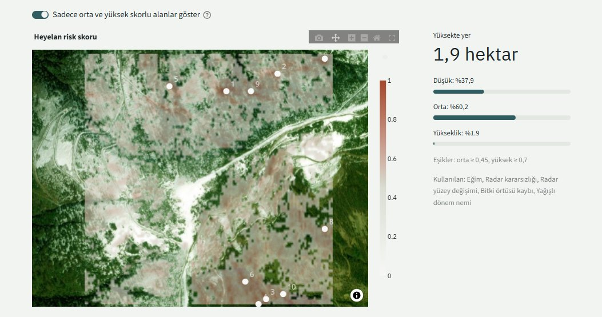
Her pikselin bu yılki durumu, kendi geçmiş yıllarıyla karşılaştırılarak bitki stres haritası üretilir. Böylece orman, çayır ve tarla birbirine karıştırılmaz.
Çıktı: Bitki stres skoru haritası; sınıf oranları; en önemli bölgeler. Yaprak nemi, yüzey sıcaklığı ve radar bitki indeksi bilgi katmanı olarak sunulur.
Uydu verisi bitkinin durumunu gösterir, nedenini göstermez. Sulama, gübre veya ilaç kararları saha kontrolüyle verilmelidir.
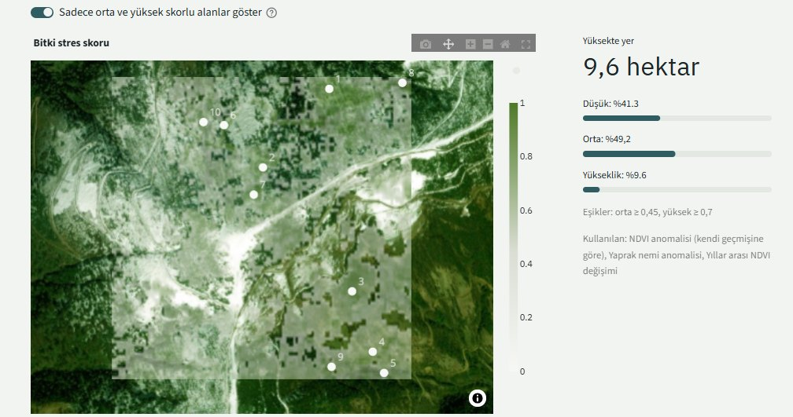
Çıplak yüzeydeki mineral alterasyonundan jeolojik ilgi haritası çıkarılır. Maden potansiyeli olabilecek sahalar ön etüt düzeyinde işaretlenir.
Çıktı: Alterasyon skoru haritası; en önemli bölgeler
Yalnızca bitkisiz yüzeyin mineralojisini gösterir; yer altındaki cevheri göstermez. Çalışmalar ruhsat sahibi adına ve jeolog denetiminde yapılmalıdır.
Tarama alanında en az 0,5 hektarlık bitişik çıplak kaya veya toprak yüzeyi yok; yüzey bitki örtüsü ya da yapılarla kaplı. Maden ön etüdü, kayalık ve bitki örtüsü seyrek bölgelerde (ör. Gümüşhane, Bayburt) anlamlı sonuç verir.
Düzenli geometri, kurak mevsim bitki izi ve doku anomalilerinden araştırma adayları belirlenir. Adaylar bilinen site veritabanıyla karşılaştırılır.
Çıktı: Yapısal iz skoru haritası. Aday koordinatlar yalnızca kurum iş birliği kapsamında paylaşılır.
Akademik çalışma içindir. Adaylar kazı yeri değildir; izinsiz kazı 2863 sayılı Kanun’a göre suçtur. Yeni bir alan tespitinde müze müdürlüğüne bildirim yapılır.
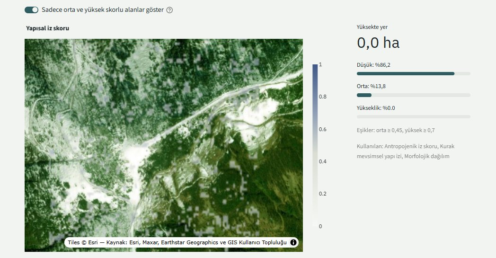
Heyelan, tarım, maden ve arkeoloji (akademik) analizleri VIP Tarama paketine dahildir. Çıktılar ön değerlendirme niteliğindedir ve saha çalışmasının yerini tutmaz. Veri kaynakları: Copernicus Sentinel-1/2, Copernicus DEM GLO-30, Landsat 8/9, ASTER GED, CHIRPS, ESA WorldCover. Fiyat için Fiyatlandırma bölümüne bakınız.
Her proje aynı doğrulanabilir hattan geçer — otomatik tespit hiçbir zaman tek başına karar vermez.
İlgi alanı için Sentinel-2, Sentinel-1, Planet ve Copernicus DEM verileri Google Earth Engine üzerinden derlenir.
Atmosferik düzeltme, geometrik hizalama ve bant kalibrasyonu yapılır; mevsimsel etkiler ayrıştırılır.
Termal, vejetasyon, InSAR koherens ve morfolojik modüller paralel çalışır; makine öğrenmesi modeli adayları puanlar.
Farklı modüllerden gelen sinyaller çakıştırılır (fusion), yanlış pozitifler bilinen alan kataloğuyla filtrelenir.
Öncelikli koordinatlar AnomaliRadar üzerinden saha ekibine iletilir, sonuçlar merkeze geri aktarılır.
Bulgular, koordinatlar ve güven skorlarıyla birlikte kurum için okunabilir bir rapor halinde teslim edilir.
20'den fazla özel modülden oluşan bir işlem hattı, tek bir kontrol panelinde birleşiyor.
Yüzey sıcaklık anomalileri ve bitki örtüsü stres desenleri üzerinden gömülü yapı izlerinin tespiti.
Yükseklik verisinden mikro-topografik düzensizliklerin çıkarılması ve zemin önceliklendirmesi.
Radar koherens kaybından yüzey bozulmalarının ve gizli yapı sınırlarının izlenmesi.
Mevsimsel ve çok yıllı görüntü serileriyle kalıcı anomalilerin geçici etkilerden ayrıştırılması.
PCA ve sınıflandırma modelleriyle çok bantlı sinyallerin tek bir güven skoruna indirgenmesi.
Tespit edilen anomalilerin saha koordinatlarına metre altı hassasiyetle indirgenmesi.
Aşağıdaki paneller, test koordinatları üzerinde çalıştırılan analiz motorunun gerçek çıktılarıdır — pazarlama görseli değil, doğrudan işlem hattının kendisidir.
Tek koordinat için sekiz farklı türetilmiş katman (hillshade, eğim, local relief, sky-view factor, negatif openness, NDVI, TPI) aynı anda üretilir ve korroborasyon panelinde çakıştırılır. Bu örnekte 7 aday anomali güven seviyesine göre işaretlenmiş, koordinatlarıyla birlikte listelenmiştir.
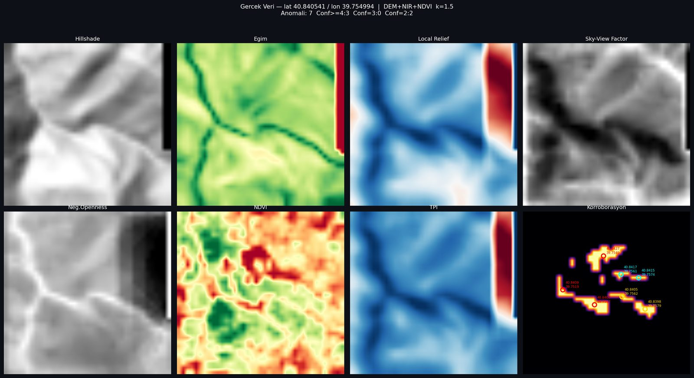
Negatif openness katmanı ile termal sinyal çakıştırılarak, gürültü içinden istatistiksel olarak anlamlı sıcak/soğuk noktalar ayrıştırılır. Yüksek güvenli adaylar kırmızı, ikincil adaylar mavi ile işaretlenir.
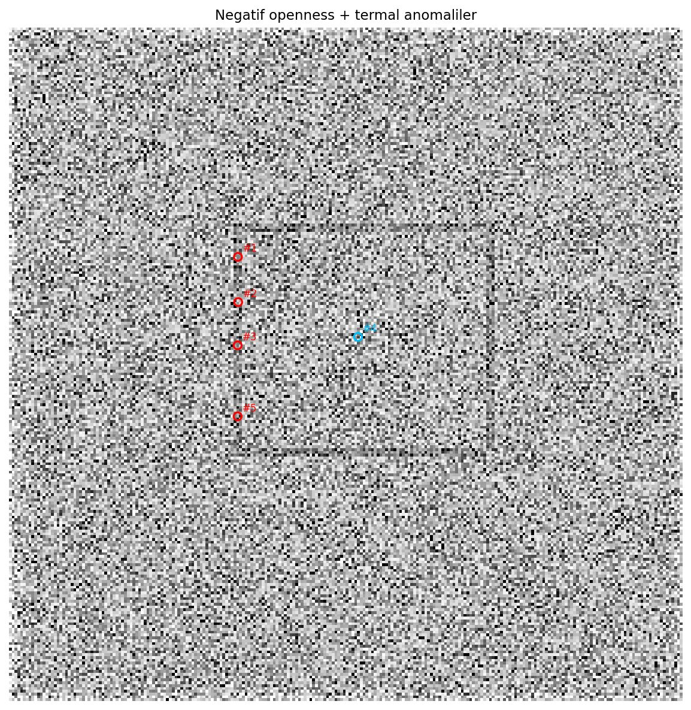
DEM türevleri (hillshade, sky-view factor, negatif openness, local relief) ile üretilen crop-mark skorlama modeli, yüzey altındaki dikdörtgen bir yapı sınırını net biçimde ortaya çıkarır. Aynı bölgenin termal z-skoru, bağımsız bir katman olarak bulguyu doğrular.
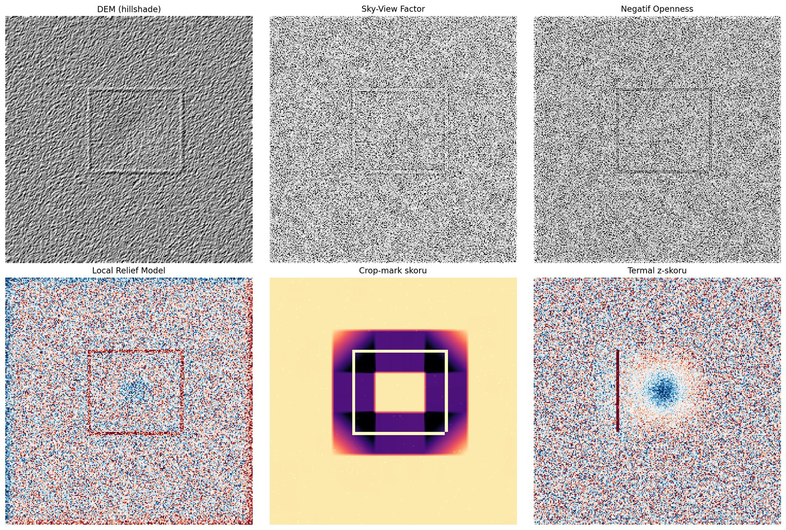
Yöntemi denediğimiz test alanlarından analiz haritaları. Görsellere tıklayarak büyütebilirsiniz.
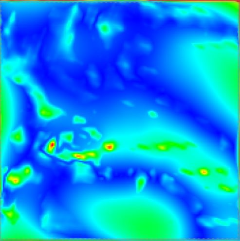
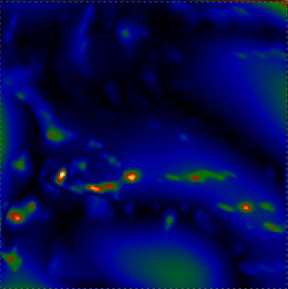
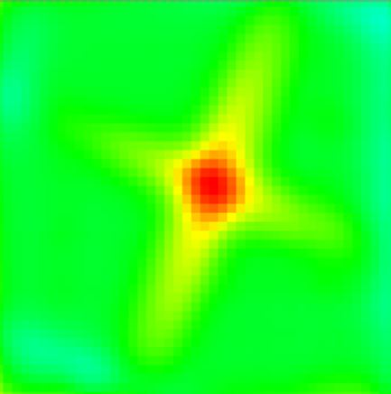
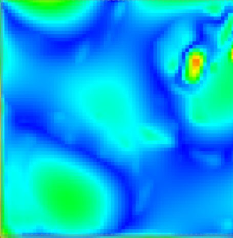
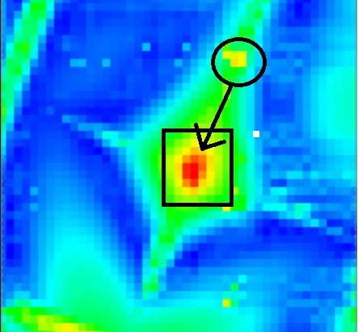
Görseller çıktı biçimini göstermek içindir; bulgu, kazı veya arama izni yerine geçmez. Saha doğrulaması ayrıca yapılmalıdır.
Kazı öncesi alan önceliklendirme ve koruma alanı planlaması için ön keşif raporu.
Saha ziyareti öncesi alterasyon haritasıyla arama bütçesinin doğru bölgelere yönlendirilmesi.
Geniş alan taramalarında saha zamanını en yüksek olasılıklı noktalara odaklama.
Bireysel taramalarda fiyat tarama alanına ve seçtiğiniz analiz paketine göre hesaplanır. Kurumsal çalışmalar için ihtiyaca özel teklif hazırlıyoruz.
Dönüm başına 5.000 TL. Alan bedeline, seçtiğiniz analiz paketinin ek ücreti eklenir.
Çıktılar ön değerlendirme niteliğindedir; kazı veya arama izni yerine geçmez. Ayrıntılar için Yasal Uyarı bölümüne bakınız.
Geniş alan taraması, birden fazla saha veya düzenli izleme gerektiren müze, üniversite ve şirket projeleri.
İlgi alanınızı ve hedefinizi paylaşın, uygun modülle birlikte bir ön değerlendirme dönüşü yapalım.
Telegram'dan Yaz E-posta Göndervestigiasystemtr@gmail.com
6698 sayılı Kişisel Verilerin Korunması Kanunu ("KVKK") uyarınca, veri sorumlusu sıfatıyla Vestigia, iletişim formu aracılığıyla paylaştığınız ad soyad, kurum, e-posta adresi ve mesaj içeriğinden oluşan kişisel verilerinizi aşağıdaki amaçlarla işler:
Verileriniz, açık rızanıza dayanılarak işlenmekte olup üçüncü taraflarla, yasal zorunluluklar dışında paylaşılmaz. Verileriniz, talebinizin sonuçlanmasından itibaren makul bir süre boyunca saklanır ve sonrasında silinir veya anonim hale getirilir.
KVKK'nın 11. maddesi kapsamında; verilerinizin işlenip işlenmediğini öğrenme, işlenmişse buna ilişkin bilgi talep etme, işlenme amacını öğrenme, yurt içinde/dışında aktarıldığı üçüncü kişileri bilme, eksik/yanlış işlenmişse düzeltilmesini isteme, silinmesini/yok edilmesini isteme ve itiraz etme haklarına sahipsiniz. Bu haklarınızı kullanmak için iletişim bölümündeki Telegram hattı, vestigiasystemtr@gmail.com adresi veya form üzerinden bize ulaşabilirsiniz.
2863 sayılı Kültür ve Tabiat Varlıklarını Koruma Kanunu'nun 35. maddesi uyarınca, kültür varlıklarını ortaya çıkarmaya yönelik araştırma, sondaj ve kazı yapma hakkı yalnızca Kültür ve Turizm Bakanlığı'na aittir; bu iznin bilimsel ve mali yeterliliği kabul edilmiş kurum ve heyetlere verilmesi Cumhurbaşkanı kararına bağlıdır.
Aynı Kanunun 74. maddesi, kültür varlığı bulmak amacıyla izinsiz kazı veya sondaj yapılmasını 2 ila 5 yıl hapis cezasıyla; izinsiz arama fiilini ise ayrı bir ceza ile düzenlemektedir. Bu suç şikayete tabi değildir.
Vestigia'nın ürettiği analiz çıktıları, yalnızca ön değerlendirme ve önceliklendirme amaçlıdır — hiçbir bulgu, ilgili Kültür Varlıklarını Koruma Bölge Kurulu, Müze Müdürlüğü veya Kültür ve Turizm Bakanlığı'ndan usulüne uygun izin alınmadan sahada fiziksel müdahaleye (kazı, sondaj, arama) konu edilemez. Hizmetlerimiz yalnızca bu izinlere sahip veya izin sürecini yürüten kurumsal müşterilere yöneliktir. Saha çalışması sırasında kaçak kazıya dair bir bulguya rastlanması halinde, durumun ilgili Müze Müdürlüğü'ne veya kolluk kuvvetlerine bildirilmesi yasal bir zorunluluktur.